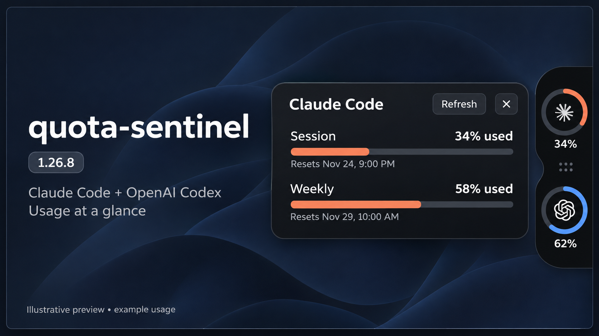

quota-sentinel
See Claude Code and OpenAI Codex usage limits and reset times in a small Windows desktop dock.
Windows x64 with Microsoft Edge WebView2. The current downloads are unsigned.

How it works
Drag the grip to a screen edge. Hover to see available session and weekly usage, or click a ring to open the corresponding desktop app. Live usage relies on your existing Claude Code and Codex CLI sign-ins.